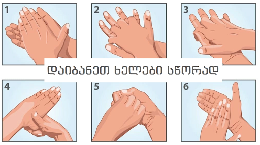
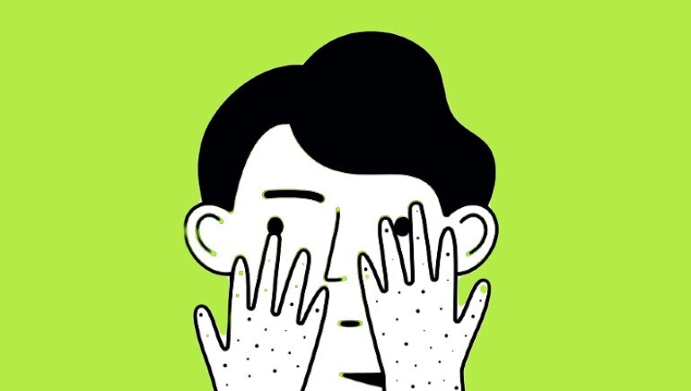

პრევენციის საშვალებები
რეგულარულად დაიბანეთ ხელები საპნით ან ალკოჰოლური ხელის გასასტელირებელი სითხით.
რატომ?
ხელების დაბანვა კლავს ვირუსებს,რაც დაავადების რისკს ამცირებს.

დაიცავით სოციალური დისტანცია შეეცადეთ მინიმუმ 1 მეტრის მოშორებით დადგეთ ადამიანებისგან,რომლებსაც აცემინებთ ან ახველებთ.
რატომ?
როცა ადამიანი აცემინებს ან ახველებს ის გამოყობს უმცირესს ფოლეკულებს-ბაქტერიებს,რომელიც შეიძლება ვირუსს შეიცავდნენ.თუ არ დაიცავთ სოციალურ დისტანციას მსგავსი ადამიანისგან დაავადების რისკი მაღლა იწევს.
არ შეეხოთ თვალებს,ცხვირსა და პირს თუ ახველებთ ან აცემინებთ შეეცადეთ სახეზე ერთჯერადი ხელსახოცი ან მოხრილი მკლავი აიფაროთ.
რატომ?
ხელით ბევრ ზედაპირს ვეხებით, საიდანაც ბევრი ვირუსი გვეკრობა. ბინძური ხელით კი უამრავი დაავადების გადადება შეიძლება მათ შორისაა Covid-19.

თუ გაქვთ მაღალი სიცხე,ახველებთ და გიჭირთ სუნთქვა მიმართეთ ექიმს.
რატომ?
ახალი ვირუსისთვის დამახასიათებელია ზემოთ ნახსენები სიმპტომები,სანამ თქვენით წახვალთ საავადმყოფოში,ჯობს თქვენს პირად ოჯახის ექმთან გაიაროთ კონსულტაცია ტელეფონით რაც ყველაზე მთავარია არ დაელოდოთ სიტუაციის გაუარესებას. Covid-19 იწვევს პნევმონიას(ფილტვში წყალის ჩადგომა),რაც შეიძლება თავიდან ავიცილოთ სწრაფი მოქმედებით.
იყავით ინფორმირებული და დაიცავით წესები რომელიც თქვენს რაიონსა თუ ქალაქშია შემოღებული საგანგებო სიტუაციასთან/კარანტინთან დაკავშირებით.
რატომ?
პანდემიასთან გამკლავებას მხოლოდ მაშინ შევძლებთ თუ გავერთიანდებით მის წინააღმდეგ.ჩვენი ექიმები თავდაუზოგავად შრომობენ დაავადებულთა გადასარჩენად, ხოლო პოლიცია კომენდანტის საათის დროს ჩვენს დასაცავად თავიანთ ჯანმრთელობას აყენებენ საფრთხის ქვეშ,ერთადერთი რისი გაკეთებაც ჩვენ შეგვიძლია არის დავიცვათ წესები და შევეცადოთ დავრჩეთ სახლში